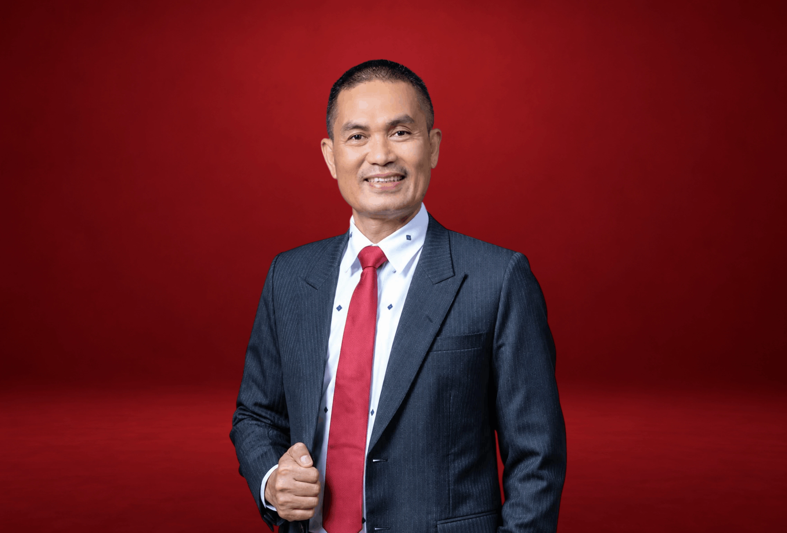

DR. SOPIAN SITEPU, S.H., M.H., M.Kn.
Managing Partner • Dewan Pakar Hukum
Sopian Sitepu merupakan salah satu pengacara yang berpengalaman dan memiliki pengetahuan hukum yang luas di Indonesia, lebih dari 20 tahun menjadi akademisi dan praktisi hukum dalam menangani berbagai perkara dan permasalahan hukum di Indonesia.
PENDIDIKAN & KUALIFIKASI AKADEMIS:
Doktor Ilmu Hukum (Dr.) • Magister Kenotariatan (M.Kn.) • Magister Hukum (M.H.)
Doktor Ilmu Hukum (Dr.) • Magister Kenotariatan (M.Kn.) • Magister Hukum (M.H.)
Spesialisasi Fokus:Hukum Acara Perdata & Pidana KhususSengketa Agraria & PertanahanHukum Kepailitan & Likuidasi Perusahaan
Konsultasi Litigasi & Legal OpinionJadwalkan Sesi →